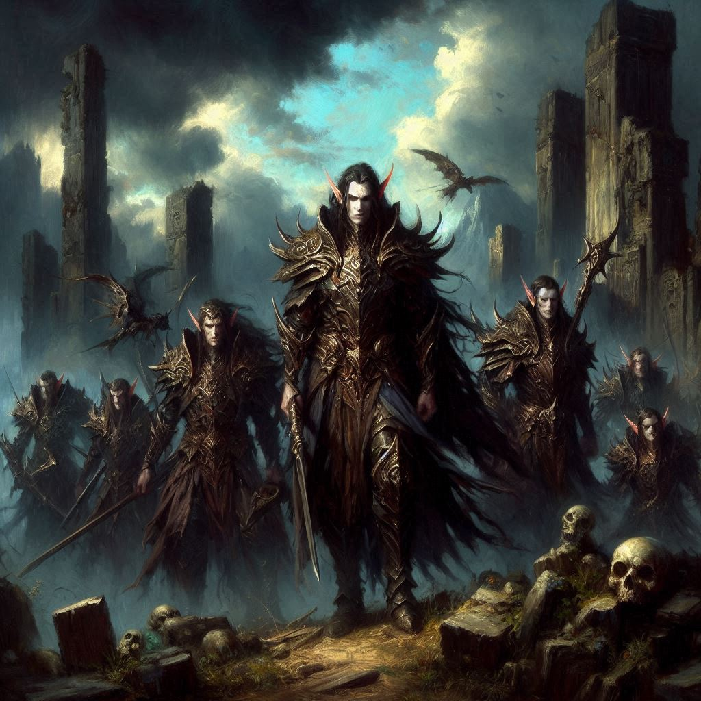
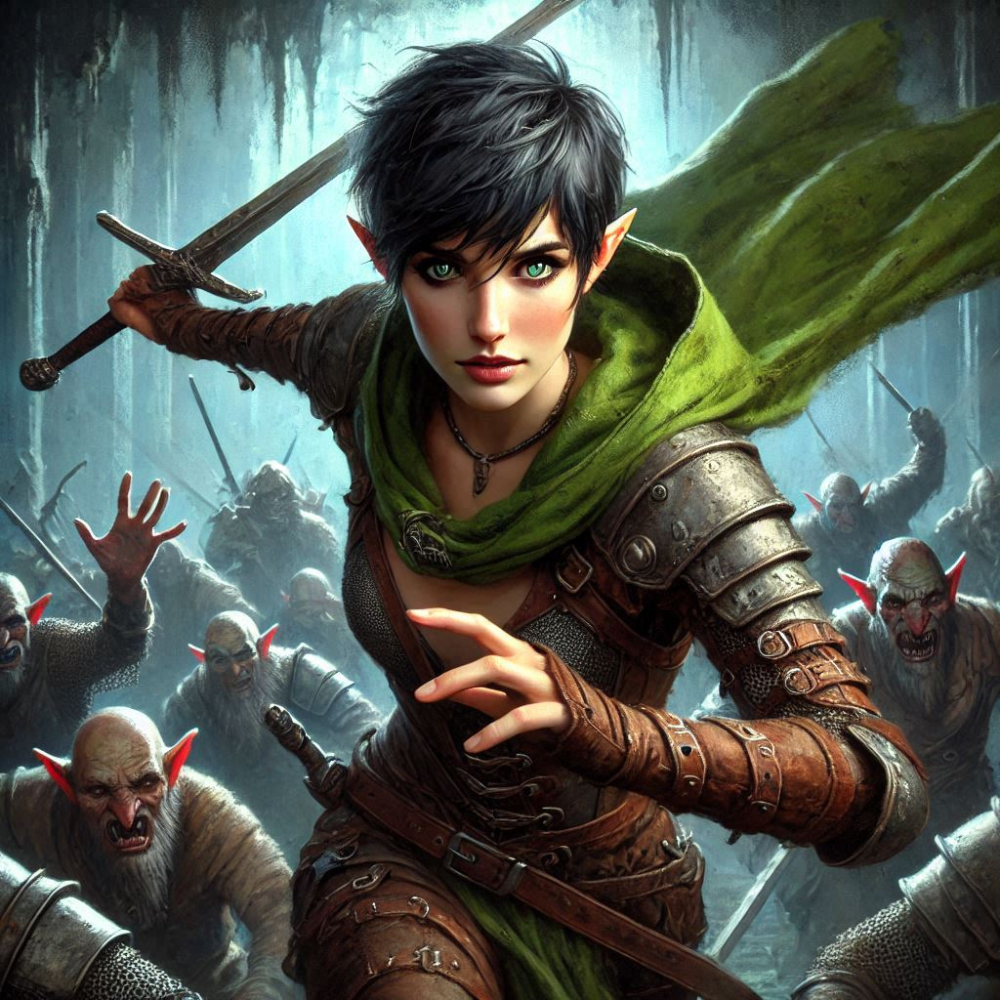
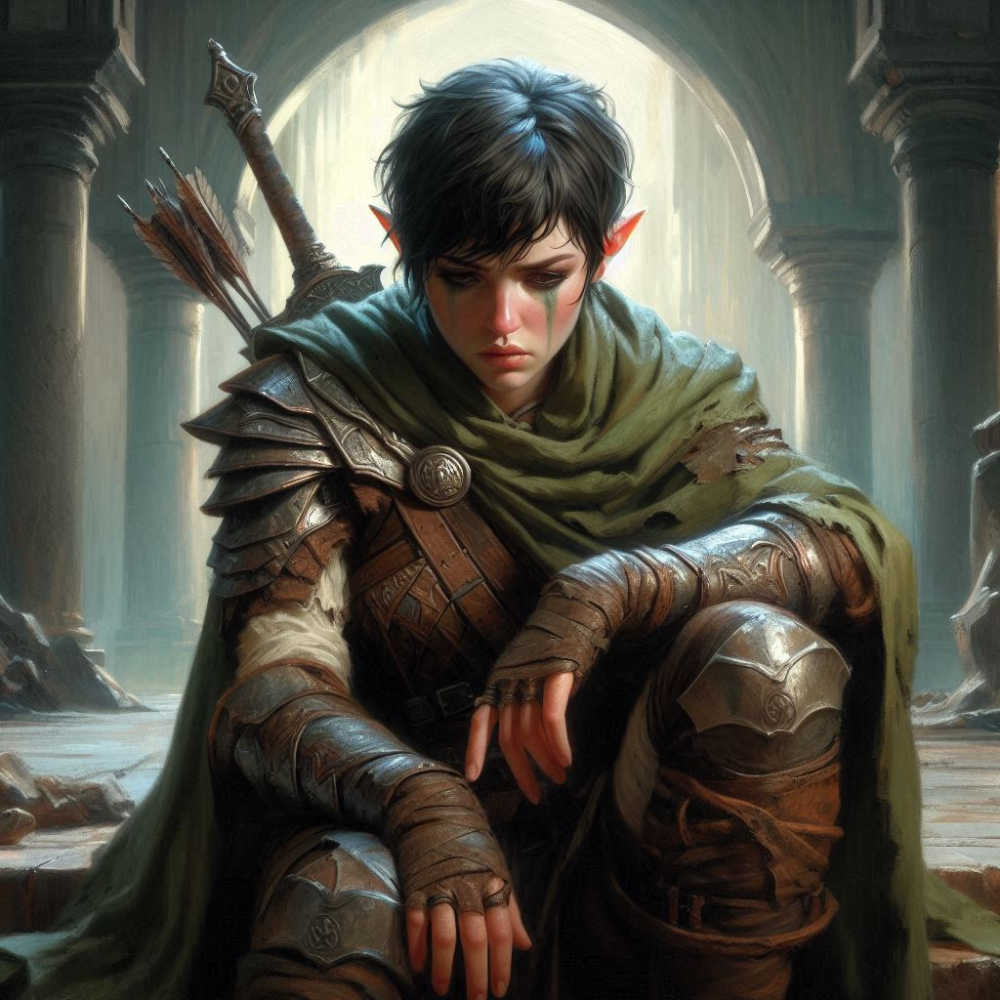

The Lost Archon
You dart through the shadowy corridors of Umbra’Thal, your breath tight in your chest as you drag Onyx along behind you. The walls of the dark fortress seem to close in with every step, the oppressive weight of the Shadow Realm thickening the air around you. Onyx stumbles, barely able to keep pace, and you steal a glance at him—his eyes, normally sharp and wise, are glazed, distant. It’s clear that his captivity has taken its toll. He is nothing like the dwarf elder you once knew.
“We have to keep moving,” you whisper, though it feels like the walls themselves might be listening.
Ahead, Elias is a silent blur, his bow in hand as he surveys the twisting passages, scanning for any sign of pursuit. He turns back, his jaw clenched, and you know he wants to say something—to tell you how reckless this is, to demand why you’re risking everything. But there’s no time for words. The sound of heavy footsteps echoes behind you, and you know Varis’s dark elves are closing in.
As you flee through the labyrinthine halls, you can’t shake the feeling that you’re running straight into a trap. But what choice do you have? You can’t lose Onyx, not after everything. You quicken your pace, Elias leading the way through a hidden passage. His movements are sharp, precise, honed from years as a ranger. He signals for you to take cover as you round a corner, ducking into the shadows.
You freeze as the sound of armor-clad boots grows louder. The dark elves are near, their harsh voices cutting through the still air. You hold your breath, pressing Onyx against the cold stone wall, your heart pounding in your ears. You hear Varis’s voice in the distance, cold and commanding. His words are unclear, but the threat in them is unmistakable.
As the footsteps pass, Elias turns to you, his voice a low hiss. “We can’t keep running, Kira. This place is a maze. We need to make a stand.”
You glance down at Onyx, who has slumped against the wall, his breathing labored. You nod. "Let’s get him outside first," you say, glancing at the secret passage ahead. You know Elias is right. But you can’t afford to lose Onyx now.
Together, the three of you dash for the hidden exit. Just as you burst into the open air of the Shadow Realm, a dark wind howls across the barren landscape. It feels like stepping into a different world—dark clouds swirl ominously overhead, the ground beneath your feet cracked and lifeless. Onyx collapses to his knees, and you drop beside him, your heart racing.
“Kira...” Onyx groans, his voice raspy. “You... you shouldn’t have come for me.”
His words hit you like a blow. You reach out, steadying him as his eyes meet yours. They are filled with pain, but something else, too—regret.
“I had to,” you say, your voice trembling slightly. “We’re not leaving without you.”
Onyx shakes his head weakly. “You don’t understand. I... I am not who you think I am.” He takes a deep breath, and when he speaks again, his voice is laced with a strange calm. “I am Adonais. The Archon of Light. My destiny was to end this... to sacrifice myself to Yaldaboath and seal the portal forever.”
The words leave you cold, the weight of them sinking in. “What are you saying? You’re the only one who can stop this.”
Onyx’s gaze is distant as he speaks. “There is no stopping this... not without my death.”
You want to scream, to tell him he’s wrong, but before you can, a sharp whistle pierces the air. Dark elf scouts have found you. Their arrows thud into the ground at your feet, forcing you to roll to the side. Elias is already nocking an arrow to his bow, unleashing a barrage of shots that force the dark elves back, but they’re relentless.
Onyx stumbles to his feet, his hands trembling as he raises them. “No... no more running,” he mutters. Light begins to glow faintly from his palms, but it’s weak. Too weak.
“Onyx, stop!” you cry, but it’s too late. The dark elves charge, their blades gleaming in the low light. You draw your sword, parrying the first blow, but there are too many of them. Elias shoots arrow after arrow, taking down several, but they keep coming.
Suddenly, a blade slices across your arm. Pain sears through you, but you grit your teeth and press on, swinging your sword in desperate arcs. Elias fights at your side, his fury unmatched as he drives his dagger into the nearest elf.
But even with Elias’s skill, you’re overwhelmed. Onyx stumbles again, collapsing to his knees, and you scream his name as two elves close in on him. You leap toward him, but another elf grabs you, yanking you back. The world seems to slow as you watch, helpless, as the dark elves raise their blades.
“No!” you scream. Onyx's eyes meet yours one last time. His lips move, but no sound comes out.
And then, in one swift motion, the blades fall. Blood sprays across the ground, and Onyx slumps forward.
Everything stops.
You freeze, your mind numb. Onyx—Adonais, your friend—lies dead before you, his sacrifice meaningless. The portal isn’t sealed. Yaldaboath still looms.
The dark elves seize you, binding your hands as they haul you to your feet. Varis emerges from the fortress, his cold eyes gleaming with victory. He approaches slowly, savoring the moment.
“Such a waste,” Varis says, his voice dripping with mockery. “Onyx, or should I say Adonais, thought he could defy me. And now, you’ve lost your precious archon. How fitting.”
You struggle, fury rising in your chest. But Varis only laughs, motioning for his soldiers to take you away. “Throw her in the dungeon. Let her rot with the memory of her failure.”
As they drag you off, your mind reels with the loss, the overwhelming sense of defeat. The door slams shut behind you, leaving you alone in the darkness of the dungeon.
Varis’s final words echo in your mind: You’ve lost.
But deep down, beneath the pain, a spark of defiance still burns. You won’t stop fighting. You can’t.
You will avenge Onyx. You will stop Varis. No matter the cost.